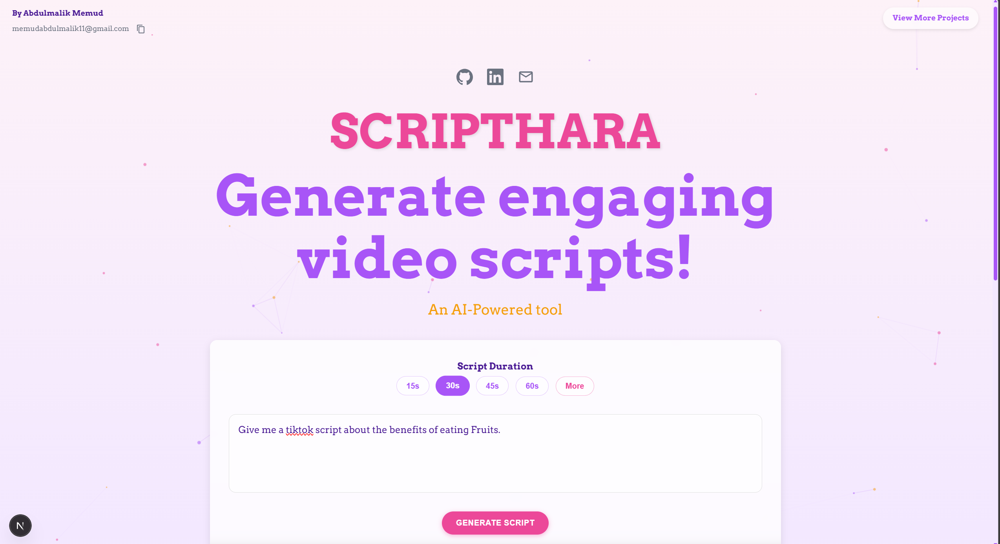
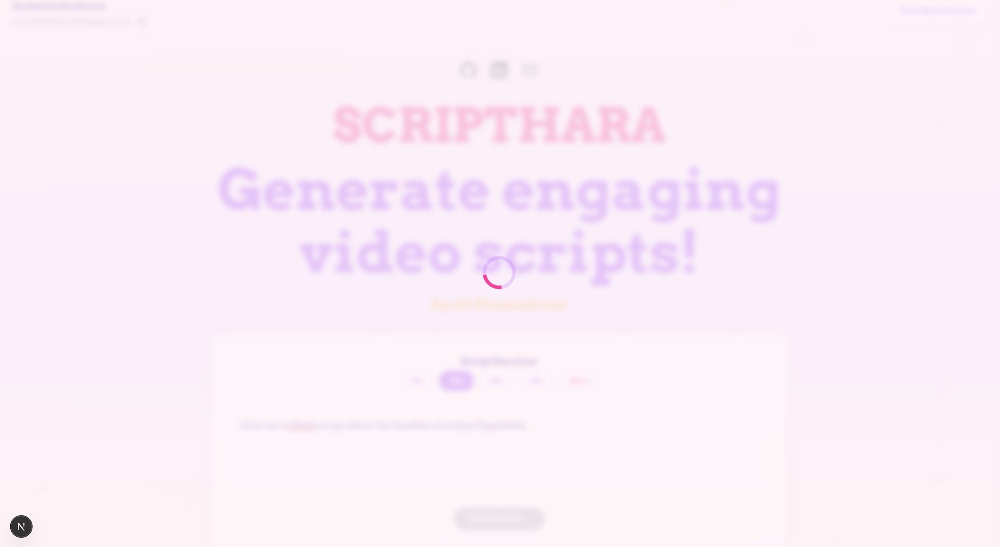
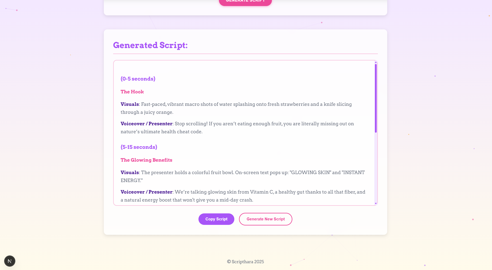

Scripthara - Video Script Generator
  Full Description
Scripthara is an AI-powered web application designed to streamline the content creation process for social media creators. By integrating Google's Gemini AI, the tool transforms simple user topics into structured, time-synchronized video scripts tailored for platforms like TikTok, Instagram Reels, and YouTube Shorts. Users can define specific durations or use natural language inputs, and the system intelligently parses these requests to deliver production-ready scripts complete with visual cues, voiceovers, and precise timing markers, all wrapped in a responsive and interactive interface.
Problem I Solved
Content creators often face significant challenges with writer's block and the technical difficulty of pacing scripts to fit strict short-form video time limits. Scripthara addresses this by automating the creative structuring process, eliminating the guesswork involved in timing spoken dialogue. It provides a reliable solution that instantly converts raw ideas into formatted, actionable content, allowing creators to focus on filming rather than calculating word counts or formatting text for teleprompters.
Key Features
- AI-Powered Generation: Uses Google Gemini to create context-aware scripts with precise timing.
- Smart Duration Parsing: Automatically detects time constraints from natural language inputs (e.g., "Write a 5 minute script").
- Performance Caching: Implements an in-memory Key-Value store to cache results and reduce API latency.
- Structured Formatting: Delivers distinct sections for Time Markers, Visuals, and Voiceovers.
- Resilient Fallbacks: Ensures functionality continues with template scripts even if the AI service is unavailable.
- Interactive UI: Features smooth animations, particle backgrounds, and one-click clipboard copying.
Technologies Used
- Frontend: Next.js, React, Framer Motion, React TSParticles.
- Backend: Next.js API Routes, Node.js, Google Generative AI SDK.
- Styling: Custom CSS with variable-based theming and Arvo typography.
- Utilities: Regex for string parsing and in-memory Map for caching.
What I Learned
Developing Scripthara provided hands-on experience in integrating Generative AI into a production workflow, specifically highlighting the importance of prompt engineering to enforce strict structural output from LLMs. I deepened my understanding of Next.js server-side API routes and hybrid state management, while also learning to implement efficient caching strategies to optimize API usage. Additionally, handling natural language inputs through Regex and creating graceful fallback systems significantly improved my ability to build resilient, user-centric applications.